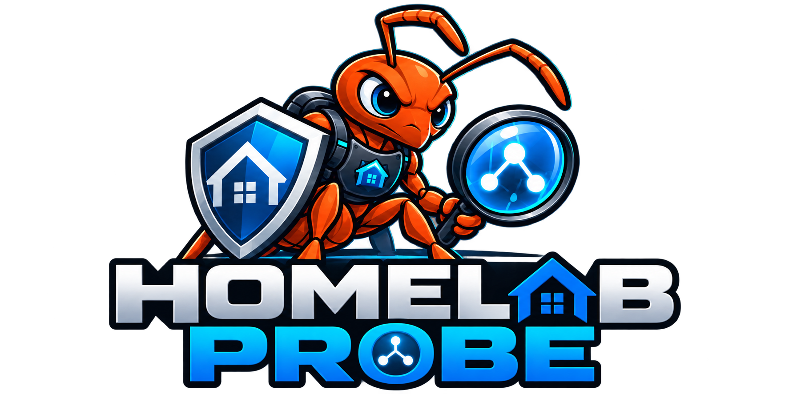

⌕
Query & Inventory
Explore devices, clients, networks, Wi‑Fi, switch ports and DHCP reservations. Export to tables, JSON or CSV.
A read-only command-line toolkit for understanding, troubleshooting and inventorying your UniFi network — without changing your controller.

Homelab Probe turns controller data into practical views for inventory, troubleshooting and ongoing network health.
Explore devices, clients, networks, Wi‑Fi, switch ports and DHCP reservations. Export to tables, JSON or CSV.
Draw the uplink tree from your gateway down, including ports, link speeds, client counts and visible problems.
Investigate a client by name, MAC or IP and see where it attaches, link quality and related findings.
Inspect AP radios, channel planning, neighboring networks, internet health, monitoring and speed-test history.
Surface critical, warning and informational findings plus risky settings such as open Wi‑Fi and firmware updates.
Save local inventory snapshots and compare them later — or compare a snapshot directly against your live network.
Focused commands help you move from “something's wrong” to useful evidence. Structured JSON output also makes Homelab Probe script-friendly.
$ hlp diagnose ✓ Controller reachable ✓ Gateway online ⚠ 2 devices require attention $ hlp topology gateway ├── switch-office 1 Gbps │ ├── ap-office │ └── workstation └── switch-lab 2.5 Gbps ├── server └── nas $ hlp client workstation ↳ tracing client attachment & health...
Homelab Probe is designed around read-only access to your UniFi controller. It gathers the information you need to understand problems without turning a diagnostic session into a configuration change.
Explore the source, documentation, roadmap and current development on GitHub.
Open Homelab Probe on GitHub ↗